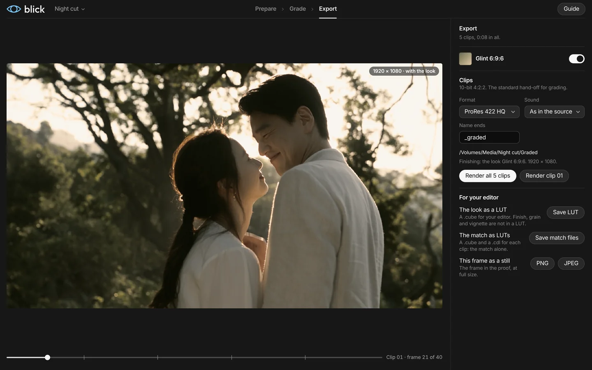
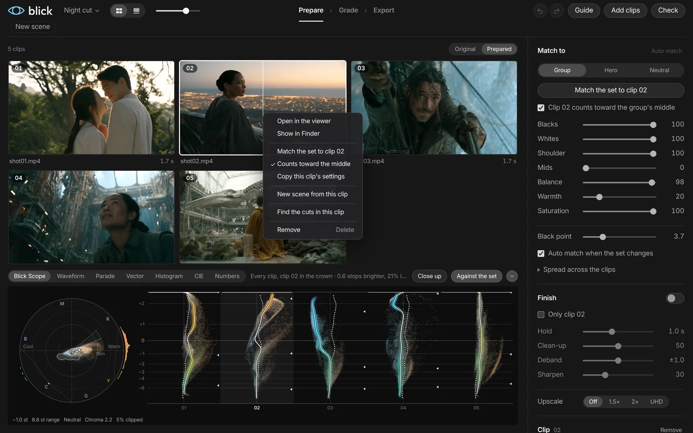

Workflow
From the generator
to the edit.
Blick is the step between making clips and cutting them. Three parts, in the order you need them: Prepare, Grade, Export. Clips go in as they came out of the generator and leave as one film.
The three parts
Prepare
Drop clips, a folder or a timeline anywhere on the window. Blick reads them, matches them to each other and, where you want it, finishes them.
Grade
Press Generate. Take the grade it writes, press again for another, or choose a look from the library. Move anything you like.
Export
Render new files with the match, the finish and the look in them, send them back to your editor, or take the look along as a LUT.
Projects
Close it tonight.
Open it as you left it.
A project is one set of clips with everything done to it: the match, the scenes, the looks, each clip's own trims. The first page lists your projects under the eye, each with a small picture, its name and when you last had it open.
- Nothing is read twice Blick 3.7
- Blick keeps what it read of every file: its measurements and its stand-in pictures. A project opens as it was closed, and a file is read again only if it has changed.
- Undo, everywhere
- Undo and redo stand in the bar, for Prepare and for Grade. A look taken out of the row comes back. So does a scene.
- Your files stay yours
- Blick never writes to a clip you gave it. Removing a project removes the project, never a clip. Renders go to a folder you choose.
Editors
Send the timeline.
Get the film back.
A timeline, or a part of one, comes in from your editor. Blick asks which clips to bring in. After the render the finished clips go back as a sequence of their own, each where its original sits. Your original timeline is never written over.
- DaVinci Resolve
- Five scripts under Workspace, Scripts, installed from Blick: send the timeline or In to Out, bring in the finished clips, or put the match alone on each clip's first node, also as a CDL. Mac and Windows.
- Premiere Pro
- A panel, written out by Blick to double-click: send the sequence, the selected clips or In to Out, and bring in the finished clips. Premiere Pro 25.6 or later, Mac and Windows.
- Final Cut Pro
- Export XML in Final Cut and drop the file on Blick. Back, Blick writes the project as FCPXML and hands it to Final Cut in one press, picture and sound.
- CapCut
- Blick reads the project's folder and puts the finished clips back as a copy of the project beside it, with them in place. The project itself is never written to.
A sequence that goes back to Premiere Pro or Resolve carries the picture. The finished files have their sound; the sequence does not place it.
Export
Rendered for the edit.
Or taken along as a LUT.
Write new files in the format your edit wants, with the match, the finish and the look in them and the sound carried over. Each clip is drawn with the look it wears. Or leave the files alone and take the look with you as a .cube LUT.

- ProRes
- 422 Proxy, LT, 422 and HQ, 4444 and 4444 XQ
- DNxHR
- SQ, HQ, HQX and 444
- HEVC
- 10-bit, 4:2:0 or 4:2:2, in software, or on the Mac's own chip
- H.264
- 8-bit, for review and delivery
- Lossless
- FFV1 at 10 or 16 bits, and uncompressed 10-bit
- CineForm
- 10-bit 4:2:2
- Image sequences
- DPX at 10 bits, TIFF and PNG at 16
- Stills
- The frame in front of you at full size, as PNG or JPEG, with everything on it
- The look
- A .cube LUT of the grade, without its finish, grain and vignette
- The match
- A .cube and a .cdl for each clip: the match alone, for grading on in your editor
In the hand
Quick where it counts.
Grading is a hundred small decisions. Blick is built so that none of them makes you wait or hunt for a control.
- One menu for the whole window Blick 3.6
- Right-click a clip, the picture, a look, a scene or a slider. Show the file, save the grade, copy and paste a grade or a clip's settings, rename, make a scene.
- Press, hold, let go Blick 3.7
- Every menu works in one motion: press, move to the item, let go. A plain click works as it always did.
- Quicker, same pictures Blick 3.6
- Frames that were made are kept, and the frame each clip is entered on is made ahead, so a clip you have been to comes at once. Clips are read four files at a time.
- The guide
- Switch the guide on and the foot of the window says what the thing under the pointer does. Switch it off when you know.
- Keys
- F for the picture alone, Esc back to the clips, comma and period for single frames, Cmd B to cut here, Cmd and a scroll to zoom. On Windows, Ctrl where a Mac has Cmd.
- Less text
- The window says what a control is and nothing more. What it does is said when you point at it.

On your computer
No upload. No queue.
No credits.
Blick reads, matches, grades and renders on your own computer. Your clips go nowhere, an unreleased film stays unreleased, and a grade costs nothing but the press of a button.